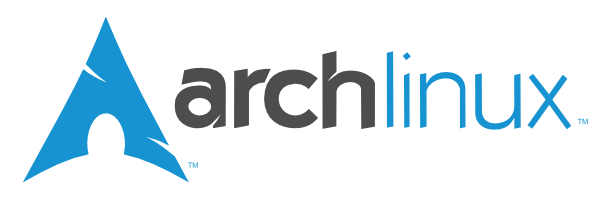

Официјален ArchLinux mirror

Содржи пакети од официјалните repo-а : core, extra, community, multilib,
testing, community-testing, multilib-testing, gnome-unstable, kde-unstable. Се
синхронизира четири пати на ден.
За да го користите миророт, додадете ја следната линија во
/etc/pacman.d/mirrorlist:
Server = http://arch.softver.org.mk/archlinux/$repo/os/$arch
ISO сликите можете да ги најдете тука. Целата содржина на
mirror-от е достапна тука.